시작 전에
준비물은 세 가지입니다.
- 01시드사이너JikKey SeedSigner 본체 (Raspberry Pi Zero 1.3)
- 02microSD 카드패키지에 동봉된 카드. 기존 데이터는 모두 지워집니다.
- 03USB 카드 리더기동봉된 리더기를 PC의 USB 포트에 연결합니다.
STEP 01
microSD 카드 준비
동봉된 USB 카드 리더기에 microSD 카드를 끝까지 밀어 넣습니다.
-
삽입 방향을 확인합니다.
금색 단자가 리더기 안쪽을 향하도록 넣습니다. 아래 사진은 방향을 보여주기 위해 카드를 일부만 넣은 모습이며, 실제로는 끝까지 넣어야 합니다.
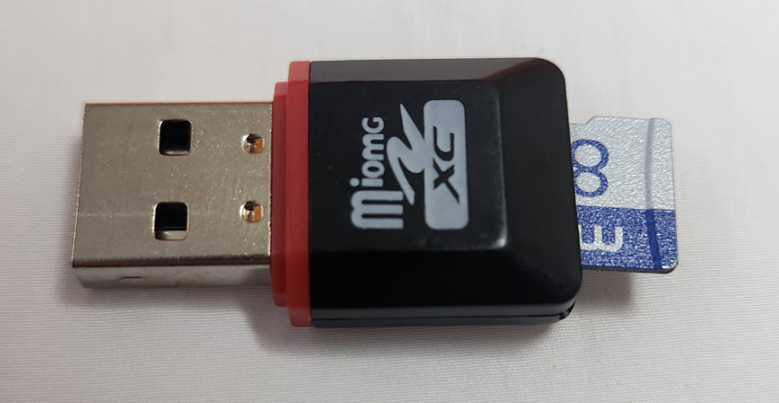
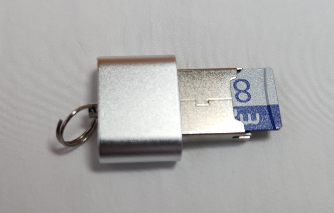
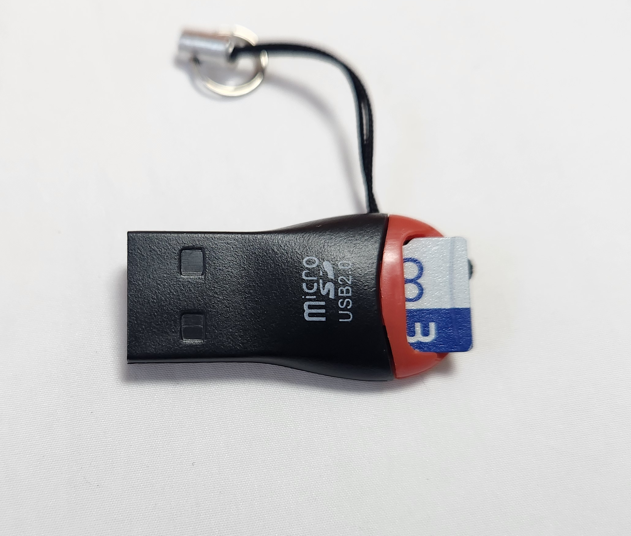
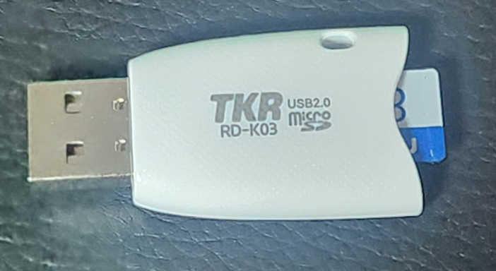
리더기 모양은 패키지에 따라 다를 수 있습니다.
-
리더기를 PC에 연결합니다.
PC의 USB 포트에 꽂으면 이동식 디스크로 인식됩니다. 포맷을 묻는 창이 뜨면 닫아도 됩니다.
STEP 02
SeedSigner OS 이미지 다운로드
PC에서 SeedSigner 공식 GitHub의 최신 OS 이미지를 받습니다.
-
공식 다운로드 표를 엽니다.
SeedSigner GitHub · Downloading the Software
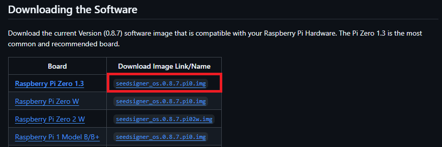
-
Raspberry Pi Zero 1.3 행의 파일을 받습니다.
표 첫 줄, 파일 이름이
.pi0.img로 끝나는 파일입니다. 다른 보드용 파일을 받으면 부팅되지 않습니다.seedsigner_os.0.8.7.pi0.img -
원하면 무결성을 검증합니다. 선택
받은 이미지가 변조되지 않았는지 서명과 해시로 확인할 수 있습니다. 비트코인 지갑이니만큼 권장합니다.
무결성 검증 가이드GPG 서명과 SHA256 해시 비교 · Windows 기준
STEP 03
Raspberry Pi Imager 설치
microSD 카드에 OS 이미지를 써 주는 라즈베리 파이 공식 프로그램입니다.
-
운영체제에 맞는 설치 파일을 받습니다.
raspberrypi.com/software 에서 Windows, macOS, Ubuntu 중 사용하는 PC에 맞는 버튼을 누릅니다.
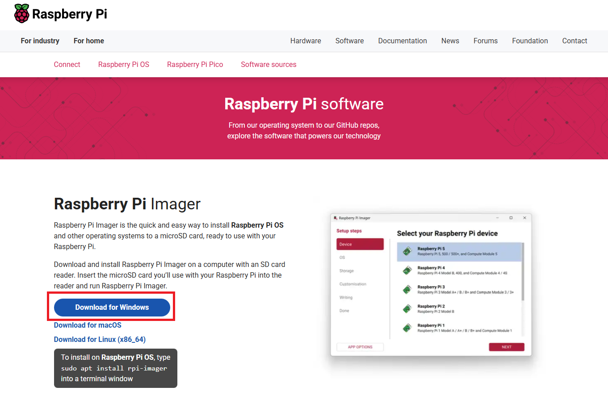
-
설치를 진행합니다.
설치 언어를 고르고 안내에 따라 OK 다음을 누르면 됩니다.
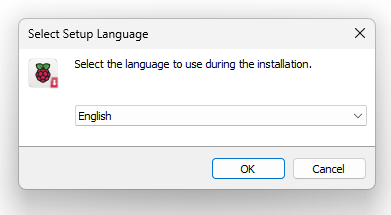
STEP 04
microSD 카드에 쓰기
Raspberry Pi Imager를 실행하고 Device → OS → 저장소 순서로 고른 뒤 씁니다.
-
Device: Raspberry Pi Zero를 고릅니다.
목록을 아래로 스크롤해 Raspberry Pi Zero를 선택하고 다음을 누릅니다.
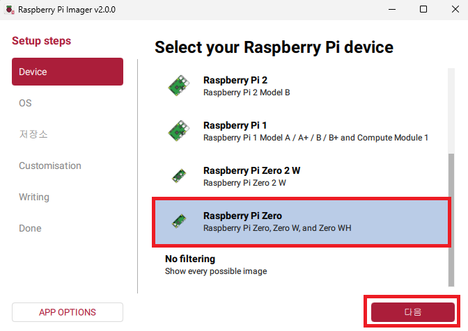
-
OS: 사용자 정의 사용을 고릅니다.
목록 맨 아래의 사용자 정의 사용(Use custom)을 누릅니다.
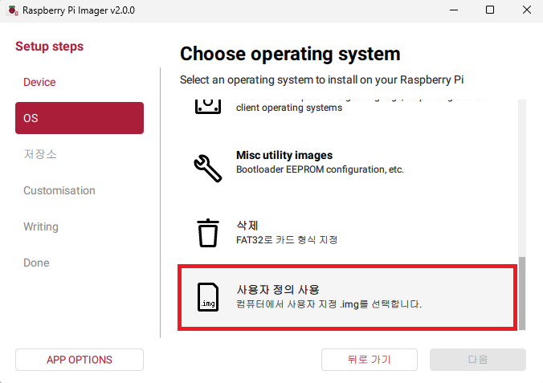
-
받아 둔 이미지 파일을 엽니다.
2단계에서 받은
seedsigner_os.0.8.7.pi0.img파일을 선택하고 열기를 누릅니다.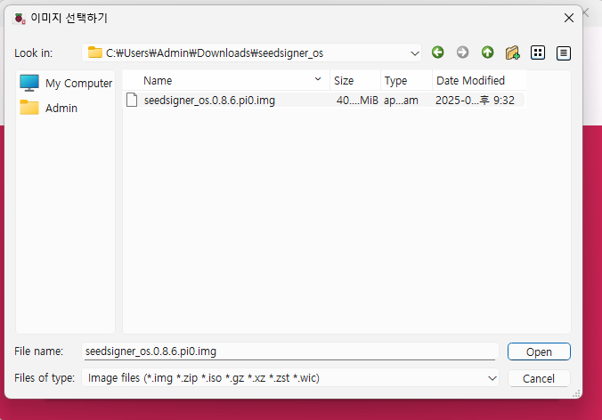
-
저장소: microSD 카드를 고릅니다.
용량이 microSD 카드와 같은 Mass Storage Device USB Device를 선택하고 다음을 누릅니다.
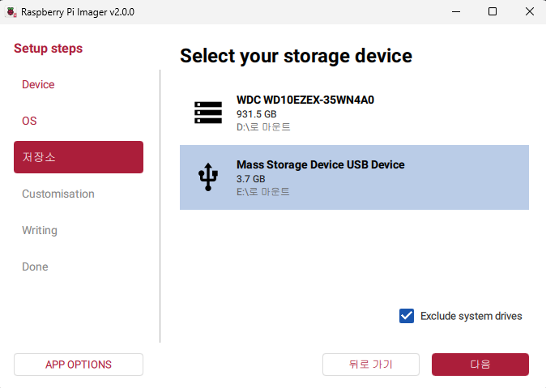
PC 하드디스크(수백 GB~TB)를 고르면 그 디스크가 지워집니다. 용량을 꼭 확인하세요. -
요약을 확인하고 WRITE를 누릅니다.
Device가 Raspberry Pi Zero, Operating system이
.pi0.img파일인지 확인합니다.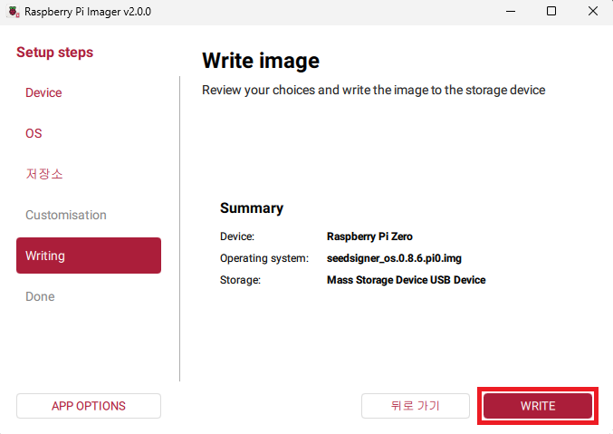
-
삭제 확인 창에서 승인합니다.
카드의 기존 데이터가 지워진다는 안내가 뜹니다. I UNDERSTAND, ERASE AND WRITE(예, 이해했습니다)를 누릅니다.
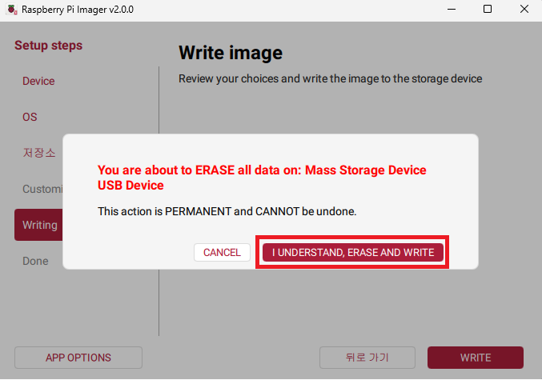
-
Write complete! 가 보이면 끝입니다.
카드는 자동으로 꺼내기 처리됩니다. 리더기를 PC에서 뽑고 microSD 카드를 빼냅니다.
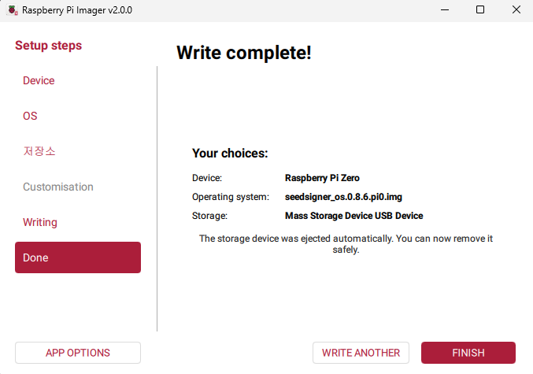
STEP 05
부팅 확인
시드사이너 측면 슬롯에 microSD 카드를 넣고 전원을 연결합니다. SeedSigner 로고에 이어 메인 화면이 뜨면 설치가 끝난 것입니다.
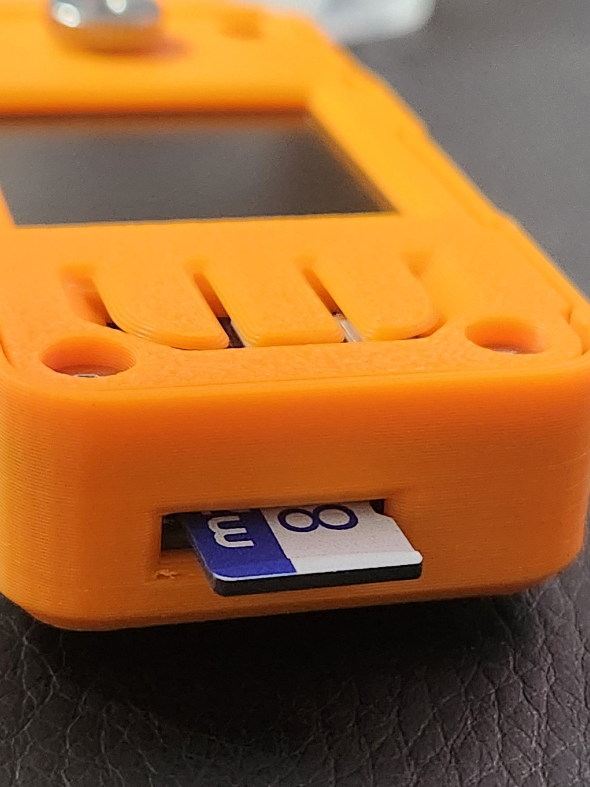
주의사항
급속충전기를 사용하지 마세요.
급속충전기는 시드사이너 고장의 원인이 될 수 있습니다. 전원은 일반 5V USB 충전기나 PC의 USB 포트로 연결하세요.